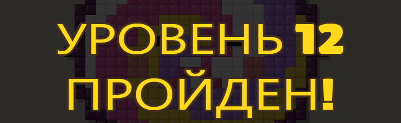
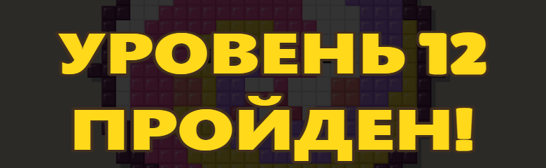
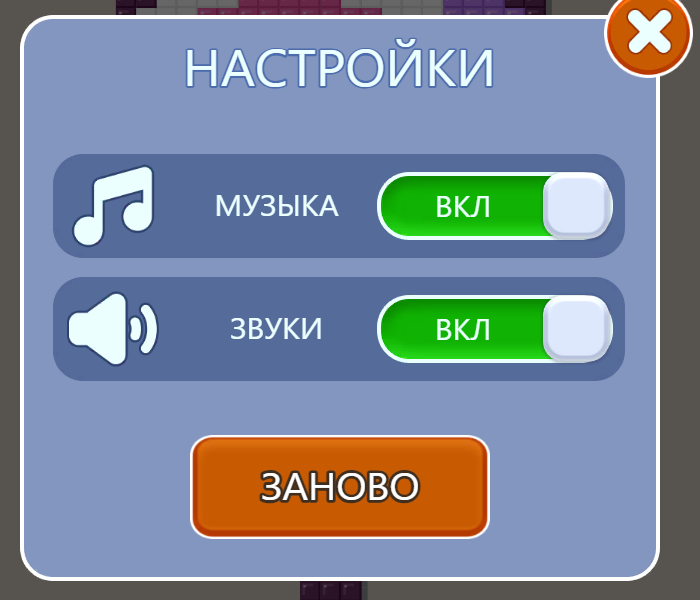
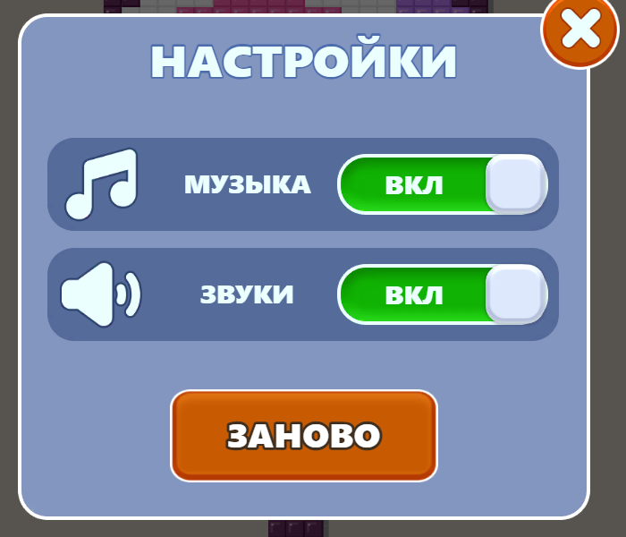
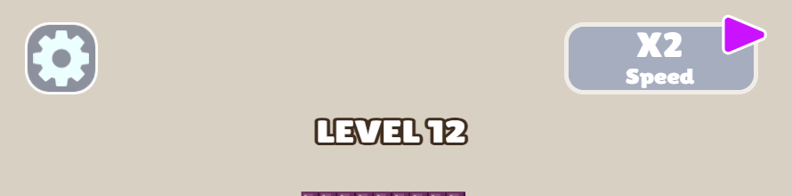
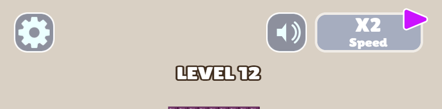
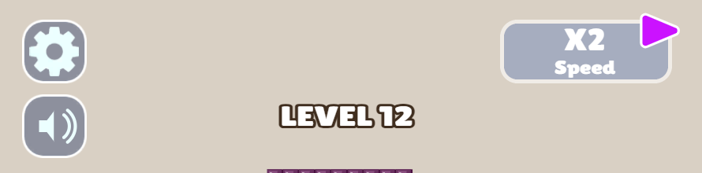
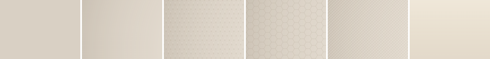
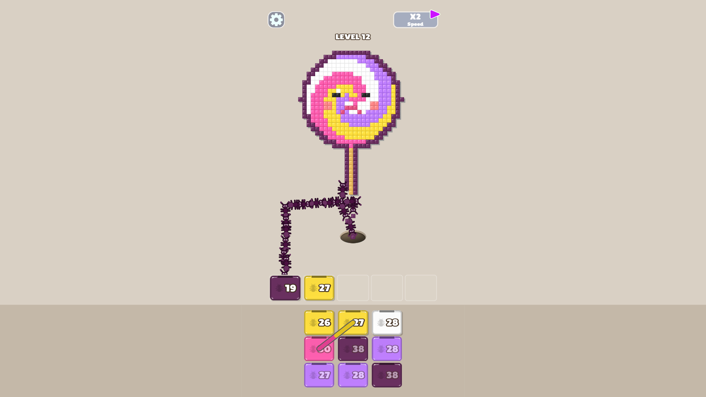
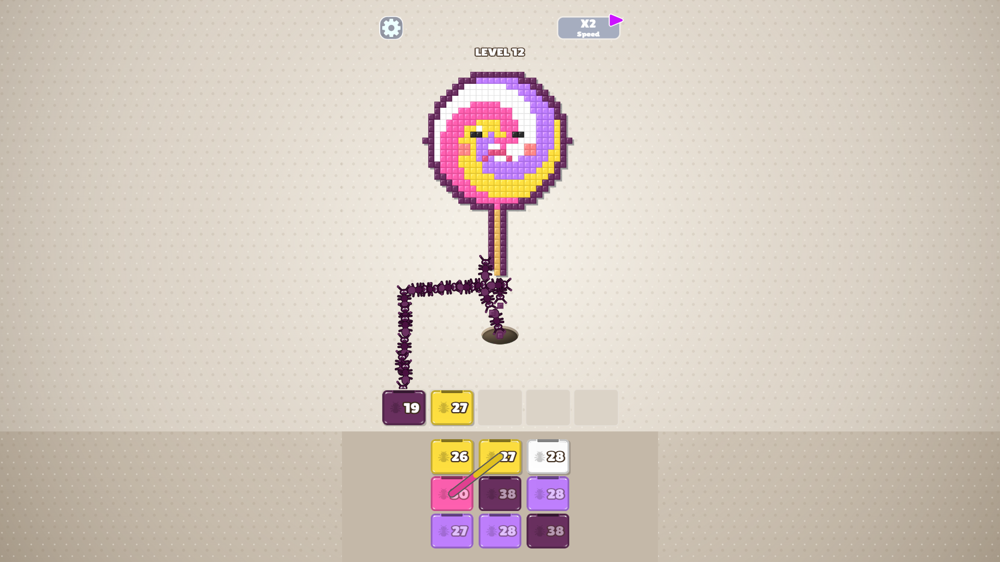

Список от 8 сентября. Каждая правка - вариант: по умолчанию игра работает как сейчас. Боевую версию не трогал.
Были неподвижные. Сделал трипод: три лапы переносятся, три держат. Фаза у каждого своя.
Вариант 2. Пять строк кода, муравьёв на экране десятки.
Жалоба третья подряд, и все три - на разные наборы. Дело не в тембре, а в частоте:
| уровень | pop | eat | land |
|---|---|---|---|
| 1 | 3.8/с | 3.8/с | 3.8/с |
| 12 | 4.3/с | 4.0/с | 3.8/с |
| 40 | 9.7/с | 9.7/с | 9.7/с |
На 40-м это тридцать щелчков в секунду без пауз. Вариант 1 - пол 0.16 с между повторами, вариант 2 - ещё минус 4 дБ. Редкие звуки (ключ, камень, победа) не тронуты.
Шесть секунд 40-го уровня из тех же файлов и громкостей, что в игре.
Вариант 2. Менять сам набор в четвёртый раз бесполезно.
В Lilita One нет кириллицы - русские буквы падают в системный гротеск. Вариант 1: Rubik 900, 7 кБ, латиница остаётся прежней.




Вариант 1. На «УРОВЕНЬ 12 ПРОЙДЕН!» видно, что цифры и буквы сейчас из разных шрифтов.
Правый верх занят: с 4-го уровня там панель X2. Отсюда два места. Кнопка гасит и звуки, и музыку разом.



Вариант 1. Вкус, а не замер - скажи, какой.
Сейчас одна плоская краска. Вариант 1 - затемнение к краям, вариант 2 - плюс точечная сетка. Доску и лоток не трогает.



Вариант 1, с оговоркой: правка самая дорогая в списке. Все 24 числа отрисовки меряют нас против кадра оригинала, новый фон эту базу обнуляет - дальше мы не копия, а своя игра.
Кадры сняты со сборки. Слева всегда то, что сейчас.